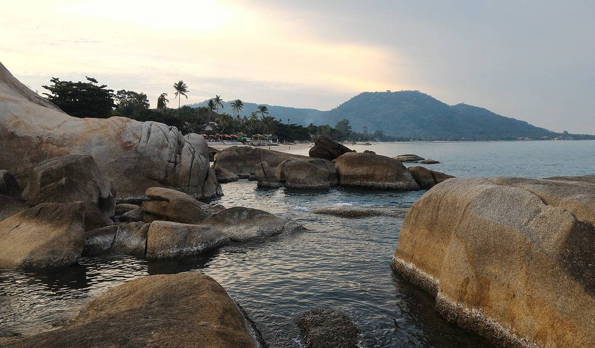

В середине календарного лета в Таиланде начинается сезон тропических дождей. Однако муссоны и ливни ничуть не смущают туристов, которые всё так же активно приезжают сюда на отдых. Это не самое благоприятное время для поездки на тайские курорты, ведь кому охота промокнуть до нитки?
Но стоит отметить, что не так страшен чёрт, как его малюют, и погода в разных регионах Королевства значительно отличается. На Самуи лето вовсе не является пиком плохой погоды. Да, дожди возможны в этот период, но их количество не так критично, как пишут на туристических сайтах. Наибольшее число осадков на острове наблюдается с октября по декабрь. В этой статье Кидпассажа вы узнаете обо всех подробностях июльского отдыха на Самуи.
Отдых на Самуи в июле: преимущества и недостатки курорта
Несмотря на предостережения турагентов относительно специфики летней погоды, среди отзывов об отдыхе на Самуи в июле преобладают положительные комментарии. Путешественники отмечают, что приезжать сюда в сезон дождей не только можно, но и нужно, ведь этот период обладает многочисленными преимуществами. Расскажем вам об основных из них:
- Погодные условия довольно благоприятные. На острове в меру тепло, дожди, конечно, идут, но имеют непродолжительный характер и чаще всего проливаются ночью.
- Сиамский залив отлично подходит для купания. Вода теплая, а течение спокойное и слабое.
- На прилавках местных рынков представлен широкий ассортимент спелых экзотических фруктов.
- На пляжах нет столпотворения, в отелях всегда найдутся свободные номера, так как людей приезжает немногo.
- В низкий сезон предлагаются самые приятные цены, практически все туристические услуги стоят намного дешевле, чем зимой.
Однако стоит упомянуть и минусы отдыха на Самуи в июле:
- Хотя на острове и преобладает облачная погода, получить солнечные ожоги и тепловой удар очень легко. Обязательно пользуйтесь защитными кремами и носите головные уборы.
- На некоторых пляжах летом ярко выражены отливы. Можно долго идти по колено в воде, но так и не достигнуть оптимальной глубины для ныряния.
- Повышенная влажность создает идеальные условия для насекомых. На отдыхе пригодится эффективный репеллент
Погода на Самуи в июле
Погода на Самуи в июле — августе теплая, влажная и душная. За счет большого количества облачных и пасмурных дней жара не слишком докучает гостям курорта и переносится вполне сносно. Но вот повышенная влажность подойдет не каждому, людям с проблемами со здоровьем стоит перенести отпуск на более благоприятное время года.
Погода в начале июля максимально комфортная и для экскурсионного, и для пляжного времяпрепровождения. Да, дожди учащаются, но идут в основном вечером или ночью и быстро заканчиваются.
Температура воздуха и воды
Климат Самуи разительно отличается от других регионов Таиланда. В тропиках дожди могут идти в любое время года, независимо от сезона, но наибольшее количество осадков, как мы уже писали, выпадает здесь с октября по декабрь. Кто бы что ни говорил, но летом на острове достаточно неплохие условия как для пляжного, так и для экскурсионного отдыха.
Температура воздуха на Самуи в июле
Средняя дневная и ночная температура на Самуи в июле составляет +32,4 °С и +28,7 °С соответственно. Показатели достаточно высокие. Кроме того, дискомфорта добавляет повышенная влажность. Обязательно выбирайте номер с кондиционером, в противном случае ночи будут просто невыносимо душными.
.png)
Температура воды в море
В среднем температура воды на острове достигает +29,5 °С. Показатель очень комфортный для купания. Приятный бонус: из-за сниженного наплыва туристов пляжи гораздо чище, чем в высокий сезон.
.png)
Количество осадков
По сравнению с июнем, дождей в июле становится немного больше. Однако они кратковременные, чаще всего выпадают ночью и не доставляют больших проблем туристам. Среднее количество осадков в июле на Самуи составляет 97,1 мм.
.png)
Солнечные, облачные, пасмурные дни
Чаще всего туристы наблюдают облачную погоду, которая занимает 47% времени всего месяца. На ясные дни приходится 30% (9 дней). Оставшиеся 23% преобладает пасмурная погода.
.png)
Пляжный отдых
.jpg)
Основная цель, которую преследуют туристы на Самуи, — это, конечно же, пляжный отдых. Все зоны для купания являются муниципальными, платить нужно лишь за аренду зонтов и лежаков.
«Чавенг»
Об этом пляже знает каждый турист, который хоть раз отдыхал на Самуи. Именно на «Чавенге» проходят самые шумные и веселые вечеринки. Однако такая молодежная активность вовсе не означает, что пляж не подходит для семейного отдыха. Теплое море, пологий вход в воду, изобилие водных развлечений, многочисленные кафе поблизости, мини-аквапарк с надувными горками — всё это нравится посетителям с детьми. Кроме того, «Чавенг» может похвастаться отличной инфраструктурой, что также немаловажно для комфорта отдыхающих.
«Маенам»
Одним из самых красивых и спокойных местных пляжей считается «Маенам», протяженность которого составляет более 5 км. Сюда любят приходить отдыхающие с детьми, так как здесь тихо, нет толп народа и шумных торговцев, дно ровное, спуск в воду плавный и пологий. Инфраструктура практически не развита: душевых и раздевалок вы тут не найдете, а чтобы воспользоваться зонтом и шезлонгом, нужно сделать заказ в пляжном кафе.
«Чонг Мон»
На этом пляже восточного побережья достаточно многолюдно, ведь он отличается хорошо развитой инфраструктурой, отменным сервисом и невероятно красивыми пейзажами. На «Чонг Мон» много развлечений: бананы и водные мотоциклы, парасейлинг и дайвинг, лодочные прогулки и водные лыжи. На пляже есть зоны для массажа, кафе и бары.
На этом пляже восточного побережья достаточно многолюдно, ведь он отличается хорошо развитой инфраструктурой, отменным сервисом и невероятно красивыми пейзажами. На «Чонг Мон» много развлечений: бананы и водные мотоциклы, парасейлинг и дайвинг, лодочные прогулки и водные лыжи. На пляже есть зоны для массажа, кафе и бары.
Экскурсионный отдых на Самуи
Если вы думаете, что на тайском острове доступен лишь ленивый пляжный релакс, то глубоко ошибаетесь. Перед местными достопримечательностями невозможно устоять, ведь они уникальны в своем роде. Тайский колорит ощущается здесь повсеместно, а тропическая природа поражает воображение.
На Самуи есть интересные места разного формата: природные и рукотворные, религиозные и развлекательные, семейные и молодежные, культурные и исторические. Лучше заранее составить список локаций, которые вы хотели бы посетить, чтобы по приезду не потеряться в большом выборе экскурсий, предлагаемых местными агентствами.
«Парадайз-парк»
.jpg)
Название заповедника «Парадайз-парк» говорит само за себя — это действительно настоящий райский уголок первозданной природы. Среди раскидистых зеленых деревьев приятно гулять в начале июля. Пройдитесь по туристической тропке до водопада, а затем поднимитесь на самую вершину горы, откуда открывается захватывающая дух панорама.
Помимо экзотической флоры, в «Парадайз- парке» вы увидите и представителей местной фауны: игуан, обезьян, попугаев, кроликов и прочих обитателей этой зеленой зоны. Не забудьте взять купальник, ведь в парке для посетителей работает бассейн.
-
Парадайз Парк на Самуи: авторскоеописание Кидпассаж
Водопад Хин Лад
.jpg)
Самуи — остров невероятной природы. Его изюминкой можно с уверенностью назвать водопады, которых тут насчитывается больше десяти. Хин Лад скорее напоминает бурную горную реку, чем величественный водопад, но это не уменьшает его живописности. К водопаду ведет извилистая тропа, прогулка по которой сама по себе станет увлекательным мини- приключением.
Струи водопада, стекающие по валунам, образуют у подножья природный бассейн с кристально чистой водой. В конце июля стоят достаточно жаркие дни, поэтому туристы с радостью освежаются в прохладной горной воде.
Биг Будда
.jpg)
Говоря о самых известных достопримечательностях Самуи, невозможно обойти вниманием огромную статую Будды, которую видно из любой части острова. 12- метровая статуя является символом острова и первым пунктом в списке диковинок, обязательных к посещению. К позолоченному Будде ведет длинная лестница в 60 ступеней, поблизости находится буддийский храм и рынок, где можно приобрести сувениры.
-
Каталог семейных развлечений на Самуи
Вероятно, детям будут неинтересны прогулки по паркам и посещения храмов и пагод. Однако и для юных путешественников здесь найдется много интересных мест:
- аквапарк
- аквариум и зоопарк
- крокодиловая ферма
- сафари-парк Namuang
Праздники, события, фестивали
Лето на острове посвящено спорту. В июле здесь проводятся открытые теннисные соревнования, в которых могут поучаствовать все желающие. Впрочем, даже если вы никогда не держали в руках ракетку, то можете занять позицию наблюдателя и просто поболеть за игроков.
Религиозных праздников на Самуи в июле не так уж много. Обычно на июль выпадает празднование Асаха Пуджа, дня основания буддизма. Считается, что именно в этот день Будда достиг просветления и поделился секретами познания с пятью йогами. Верующие в Асаха Пуджа приходят в храмы, чтобы принести монахам еду и средства первой необходимости. Обычно в этот день проводится церемония обращения мальчиков в послушники, а послушников — в монахи.
Сразу после Асаха Пуджа отмечается еще один буддийский праздник — Кхао Панса , знаменующий начало Великого поста. На протяжении последующих трех месяцев буддийские монахи удаляются в храмы, чтобы усиленно молиться и держать строгий пост Васса.
28 июля в Таиланде отмечают день рождения Его Королевского Высочества Махи Вачиралонгкорна, короля Таиланда Рамы X. Во всех городах проходят праздничные церемонии и традиционные буддийские ритуалы. День рождения принца объявлен официальным выходным.
Цены на отдых в июле
Цены на Самуи в июле являются большим преимуществом для туристов. Сэкономить получится буквально на всём: от тура до сувениров.
Цена туров
В июле турагентства снижают стоимость своих услуг на 11% в сравнении с июнем. В августе происходит подорожание. Туры вырастают в цене на 9% по сравнению с июльской стоимостью.
Стоимость перелета
Июль — самый дорогой месяц у авиакомпаний. В начале лета цены на перелет на 9% ниже, чем в середине. В последний месяц лета пассажиры платят на 4% меньше в сравнении с июлем.
Проживание
Если сравнивать июльскую стоимость номеров в местных отелях с ценами на проживание в другие летние месяцы, то ценник средний. В июне стоимость номера на 5% ниже, чем в июле. В августе постояльцы заплатят за номер в гостинице в среднем на 5% больше. Так, средняя суточная стоимость проживания в местных отелях в июне составляет 138 евро, в июле — 145 евро.
- Семейные отели на Самуи
Питание и трансфер
С питанием на острове не возникает никаких проблем. Даже если вам не придется по вкусу специфическая тайская кухня, на курорте много заведений, предлагающих привычные европейские блюда. Что касается стоимости, то она зависит от класса кафе.
В небольших кафе для местных можно сытно пообедать за 10 ТНВ. В заведениях, рассчитанных на туристов, цена аналогичной трапезы удваивается, а то и утраивается. Перекус уличной едой стоит от 1 до 10 ТНВ.
Общественный транспорт Самуи представлен сонгтео — своеобразными крытыми пикапами. Стоимость проезда на этом виде транспорта зависит от расстояния и варьируется в пределах 30–60 ТНВ.
Кроме этого, довольно популярна здесь аренда скутеров. Заплатив порядка 150 ТНВ в сутки, вы получаете возможность свободного передвижения по всему острову. Такси — достаточно дорогой вид транспорта, за одну поездку пассажиры платят около 200 ТНВ.
Как одеваться на Самуи
Даже зимой на Самуи можно обойтись без теплых вещей, летом же кофты и джинсы вам и подавно не понадобятся. Положите в чемодан шорты и футболки, платья и сарафаны. Обязательно возьмите купальники, парео и вьетнамки. На курорте вам также пригодится удобная обувь для пеших прогулок. Не забудьте солнцезащитные очки. А вот зонты можете спокойно оставлять дома — дожди не так уж активно досаждают туристам.
Рекомендации для отдыха с детьми
Хоть июль часто называют неблагоприятным месяцем для отдыха в Таиланде, мы можем с уверенностью сказать, что на Самуи отдыхать в это время не так уж плохо. Более того, отсутствие толп туристов и низкие цены делают курорт еще более привлекательным именно в летний период.
- Отпуск с детьми на Самуи: советы Кидпассаж
Дети наслаждаются пляжным отдыхом, развлекаются в аквапарке, с удовольствием посещают интересные места, а также лакомятся спелыми вкусными фруктами. А если вдруг на острове случаются дожди, то какой ребенок откажется от возможности попрыгать по теплым лужам!
Чтобы ваш отдых прошел максимально комфортно, необходимо тщательно подготовиться к поездке. Кидпассаж подготовил для вас полезную статью «Что брать с собой в Таиланд: самые нужные вещи».
Не стоит бояться метеорологических прогнозов, ведь Самуи предлагает отличный отдых в июле. Зеленый оазис посреди Сиамского залива не оставит вас равнодушными и подарит массу приятных воспоминаний.